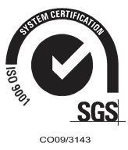

CIBERATAQUES EN COLOMBIA

DESARROLLO DE SEGURIDAD PERIMETRAL PERSONALIZADA
ATAQUES CIBERNÉTICOS EN LAS ELECCIONES DE COLOMBIA
¿POR QUÉ ESTUDIAR SEGURIDAD INFORMÁTICA?
PASOS PARA DEFENSA DE SEGURIDAD INFORMÁTICA
¿QUÉ ES SEGURIDAD INFORMÁTICA?
NORMAS ISO/ICE SEGURIDAD INFORMÁTICA.


Revisa más temáticas, didácticas e información. Enlace a actividades


